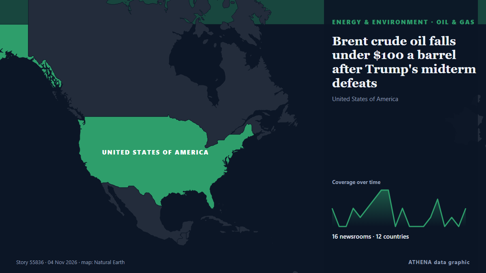

Brent crude oil falls under $100 a barrel after Trump's midterm defeats

Oil prices experienced a decline of over 1% after hitting six-month peaks, primarily due to geopolitical unrest in Saudi Arabia. από Times of India
Αναφέρθηκε ανεξάρτητα από 16 μέσα σε 12 χώρες από τις 26 Οκτ, πρώτο το Times of India· η κάλυψη εξασθενεί. Το ATHENA εκτιμά τον κίνδυνο χαμηλό (1.5/10), κυρίως λόγω της σοβαρότητάς του και της εμβέλειάς του. Βεβαιότητα 92% (υψηλή): το επιβεβαιώνουν 16 ανεξάρτητα μέσα, μέση αξιοπιστία 76%. Μέσα ανά χώρα: Ηνωμένο Βασίλειο (7), Ρωσία (5), Ηνωμένες Πολιτείες (3). Κάλυψη: 26 Οκτ έως 4 Νοε, 231 ώρες.
Γιατί έχει σημασία: Η σελίδα παρακολουθεί τα γεγονότα πίσω από τις τιμές της ενέργειας — αποφάσεις του OPEC+, διακοπές εφοδιασμού, συγκρούσεις σε θαλάσσιους δρόμους και ζήτηση — όχι τις ίδιες τις τιμές.
Τι άλλαξε: 4 νέες αναφορές από 3 μέσα στο 24ωρο έως 4 Νοε.
Πρώτη διατύπωση: Crude prices fall from six-month highs; WTI stands at $101 per barrel, Brent costs $115
Οι τίτλοι των ειδήσεων παρουσιάζονται στα αγγλικά, όπως δημοσιεύτηκαν.
Με μια ματιά
Επιλέγεται, βαθμολογείται και γράφεται από τη δημοσιευμένη μεθοδολογία του ATHENA. Κανένας συντάκτης δεν παρεμβαίνει σε μεμονωμένα γεγονότα. Πώς παράγεται ›
| 26 Oct 01:43 UTC | 2 |
|---|---|
| 26 Oct 13:43 UTC | 0 |
| 27 Oct 01:43 UTC | 0 |
| 27 Oct 13:43 UTC | 2 |
| 28 Oct 01:43 UTC | 1 |
| 28 Oct 13:43 UTC | 2 |
| 29 Oct 01:43 UTC | 3 |
| 29 Oct 13:43 UTC | 4 |
| 30 Oct 01:43 UTC | 5 |
| 30 Oct 13:43 UTC | 0 |
| 31 Oct 01:43 UTC | 2 |
| 31 Oct 13:43 UTC | 0 |
| 01 Nov 01:43 UTC | 0 |
| 01 Nov 13:43 UTC | 0 |
| 02 Nov 01:43 UTC | 1 |
| 02 Nov 13:43 UTC | 3 |
| 03 Nov 01:43 UTC | 0 |
| 03 Nov 13:43 UTC | 1 |
| 04 Nov 01:43 UTC | 1 |
| 04 Nov 13:43 UTC | 3 |
| 29 Oct 14:33 UTC | 0.0 |
|---|---|
| 29 Oct 15:22 UTC | 1.4 |
| 04 Nov 16:28 UTC | 1.5 |
Γιατί αυτοί οι αριθμοί
Σημασία
Κίνδυνος
Βεβαιότητα
Η κάλυψη — ποιος το ανέφερε και πότε
ο τίτλος όπως δημοσιεύτηκε · ανοίγει το πρωτότυπο- Times of India · ΙνδίαCrude prices fall from six-month highs; WTI stands at $101 per barrel, Brent costs $115
- OilPrice.com · Ηνωμένο ΒασίλειοOil Prices Dip but Hold Above $100 as Middle East Supply Threats Mount
- OilPrice.com · Ηνωμένο ΒασίλειοRussia’s Crude Exports Set to Fall as Diesel Production Rises
- OilPrice.com · Ηνωμένο ΒασίλειοUS Crude Oil Inventories Buck Analyst Expectations
- OilPrice.com · Ηνωμένο ΒασίλειοSanctioned Oil Tankers Find a Lucrative New Trade in the Persian Gulf
- OilPrice.com · Ηνωμένο ΒασίλειοUS Oil Inventories Fall Again As Prices Rise
- ABC News Australia · ΑυστραλίαSee how the price of everything has changed with inflation
- New Straits Times · ΜαλαισίαPetroleum subsidies projected to hit RM40bil this year
- CNBC World · Ηνωμένες ΠολιτείεςTrump methane policy rollback may have minimal impact on crude prices, EPA says
- AzerNews · ΑζερμπαϊτζάνUS crude oil inventories fall by 1.9 million barrels as production rises
- MyJoyOnline · ΓκάναBrent crude to fall to an average US$81 per barrel in 2027 – Fitch Solutions
- Express Tribune · ΠακιστάνOil set for fourth monthly gain as Hormuz tanker attack highlights supply risks
- The Rio Times · ΒραζιλίαOil Rises About 0.7% as YPF Falls 3.1% | Oil, Oct 29
- Business Recorder · ΠακιστάνOil prices settle lower
- TASS (English) · ΡωσίαBrent prices climb above $114 per barrel on ICE
- Business Recorder · ΠακιστάνOil rises on supply concerns as Houthis attack Saudi Arabia
- Gulf News · Ηνωμένα Αραβικά ΕμιράταUAE fuel prices for November: Will rising crude push petrol costs higher?
- OilPrice.com · Ηνωμένο ΒασίλειοOil Prices Head for Fourth Monthly Gain as Middle East Tensions Escalate
- TASS (English) · ΡωσίαBrent crude price rises by nearly 2.5% on ICE exchange
- APA (English) · ΑζερμπαϊτζάνBrent crude oil price rises
- Gulf News · Ηνωμένα Αραβικά ΕμιράταUAE fuel prices out today: How much will motorists save after November cut?
- TASS (English) · ΡωσίαBrent crude oil price falls below $111 per barrel for the first time since October 22
- TASS (English) · ΡωσίαBrent crude price falls below $104 per barrel, first time since October 15
- The Hill · Ηνωμένες ΠολιτείεςTrump touts oil price drop on day before election
- The Hill · Ηνωμένες ΠολιτείεςTrump touts oil price dip in closing speech
- TASS (English) · ΡωσίαBrent crude oil slips below $101 per barrel on ICE for first time since October 8
- OilPrice.com · Ηνωμένο ΒασίλειοOil Prices Rebound as Middle East Supply Fears Return
- Anadolu Agency (English) · ΤουρκίαBrent crude falls more than 3% toward $100 a barrel
- Middle East Eye · INTBrent crude oil falls under $100 a barrel after Trump's midterm defeats
- Anadolu Agency (English) · ΤουρκίαBrent crude falls below $100 a barrel for first time in month as European gas prices drop